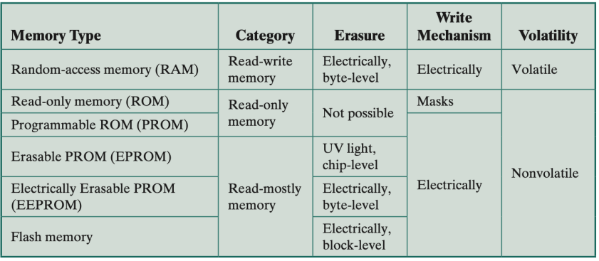
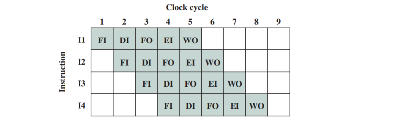

计算机组成小记
困啊，困，困到眼皮咀嚼眼珠，下巴亲吻桌面，意识在困倦中被熬成一锅浓粥，试图清醒过来却拔出粘稠的丝。老师破碎的英语断断续续的传来，像深山中精怪的呼唤；屏幕上的 PPT 变幻扭曲出炫光的轮廓，透过公式和图像我恍惚看到了神谕。
COMP2120 Computer Organization 笔记。无聊的课程前轰然倒塌的我。
This article is a self-administered course note.
It will NOT cover any exam or assignment related content.
Digital Logic
Boolean Algebra. 该部分与 COMP2121 之前的命题逻辑部分高度重合。值得注意的是逻辑与 \(\land\) 常被表示为 \(\times\)，逻辑或 \(\lor\) 被表示为 \(+\)，否定 (NOT) \(\lnot A\) 被表示为取补 (complement) \(\overline{A}\)。
Functionally complete sets. (三元) AND, OR, NOT. (二元) AND, NOT/OR, NOT. (一元) NAND/NOR.
Implementation of Boolean function. 将真值表转化为布尔表达式。常用 sum of products (SOP) 方法：
- minterm: 一个包含所有变量的累乘 (AND) 项。
- 对所有函数值 \(F=1\) 的 minterm，为 0 的变量取反，为 1 的变量不变，再求和得到布尔表达式。
S-R Latch. 有点像 flip flops，作为记忆单元。
Karnaugh Map. 卡诺图，用于化简复杂的布尔表达式。
- 二元 \(2^1\times 2^1\)，三元 \(2^1\times 2^2\)，四元 \(2^2\times 2^2\)。
- 为保证变量的连续变化，表头采用格雷码 (Gray code) 排列。
- 选出 (数量尽量少的) 若干个全 1 矩形。矩形大小必须是 \(2^n\)，可以相互重叠或者 wrap around 图的边界。
- 每个矩形对应一个 minterm，忽略 0 和 1 均取到的变量，其他的变量按照之前的规则取反/保留。
Number Representation
radix-\(10\) to radix-\(r\). 对于十进制数 \(A.B\)，分别处理其 integer part 与 fractional part。
- \(A\): 经典的 quotient remainder 方法。短除后得到的余数记得倒着写。
- \(0.B\): 不断乘 \(r\)，取整数部分直到 \(B=0\)。
binary to hexadecimal. 从左到右，四个一组，二进制中的每四个数码对应十六进制中的一个数码。记住 \(A-F\) 对应 \(10-15\)。
binary to octal. 从左到右，三个一组。
Excess \(K\) (aka Offset Binary, Biased Representation). 加 \(K\) 后再求 bit pattern 表示。
Sign-Magnitude Representation. 难以计算，\(0\) 有两种表示。
One's Complement.
- 正数：同 unsigned bit pattern。
- 负数：将 unsigned bit pattern 取反。本质上 \(-x\) 被 \(2^n-1-x\) 表示。
- 仍然存在 \(+0\) 与 \(-0\) 表示，加法实现还是不够直接。
Two's Complement.
- 正数：同 unsigned bit pattern。
- 负数：将 unsigned bit pattern 取反后加一。本质上 \(-x\) 被 \(2^n-x\) 表示。
- \(0\) 的表示唯一。由于 \(10...0_n\) 的意义空缺，将其分配给 \(-2^{n-1}\)。因此 2's Complement 的表示范围比之前的两种方法多 \(1\)：\([-2^{n-1}, 2^{n-1}-1]\)。加法计算简洁。
- Range Extension：使用 sign bit 进行填充。
Floating-Point Representation (Chapter 4.2). 与定点数表示 (Fixed-Point Representation) 相对。定点数表示规定了小数点前后 (整数部分与小数部分) 占据的位数，因此无法较精确的表示 large numbers 或 small fractions。浮点数表示则没有这样的限制。
浮点数表示本质上是二进制下的科学记数法。以 32 位为例，一个浮点数表示分为三部分：
- Sign of Significand (1 bit) \(S\)：符号位。
- Biased Exponent (8 bits) \(E\)：幂数位，通常采用 excess-127 表示。
- Significand (23 bits) \(M\)：又称 mantissa，有效数字位。类似科学记数法，有效数字被 normalize 为 \(1.\text{xx...x}\)。由于 \(1\) 总是出现在首位，它将会被省略。
浮点数表示的实值 (actual value) 计算。
- 一般来说，实值的计算符合公式 \((-1)^S\times 1.M \times 2^{E-127}\)。
- IEEE 标准下的特殊值 (special values)：exponent 为全 \(0\) 或全 \(1\)。
- subnormal values：被 exponent 全 \(0\) 标记，公式变为 \((-1)^S\times 0.M\times 2^{-126}\)。
- infinity and Not-a-Number (NaN)：被 exponent 全 \(1\) 标记。若 \(M\) 为全 \(0\)，表示 \((-1)^S \infty\)；若 \(M\) 非全 \(0\)，表示 Not-a-Number。
- 由此可见，有效的 exponent range 在 \([1,254]\) 间。这代表 normal values 的幂数范围在 \([-126,127]\) 间。
浮点数表示中精确度 (precision) 与表示范围 (range) 的 tradeoff。精确度与 significand 的位数正相关，范围与 exponent 的位数正相关。
Number Arithmetic
虽然很佩服研究出这些繁琐规则的人，但对这一部分是真的感不起兴趣。
[具体参见 Tutorial-2 slides 与 Chapter 4.3-Number Representation and Arithmetic Part III]
Addition/Subtraction. (1-4 tutorial, 5 lecture)
- Excess-\(b\) Representation.
- 2's Complement Addition/Subtraction. add bit patterns directly and ignore the carry out.
- 1's Complement Addition/Subtraction. \(\text{a+b carry out ? (ignore carryout) add 1 back : do nothing}\).
- 2's Complement Range Extension. Fill with copies of the sign bit.
- Floating-point Addition/Subtraction.
- align the significands to make two exponents equal (larger one)
- add/sub on the significand and determine the sign of result
- normalize (truncate) and rounding
Multiplication/Division. (lecture)
- 2's Complement Multiplication. 规则很复杂，总的来说是被乘数进行 sign extension，按照乘数的符号位分类讨论，列出竖式进行计算。[见 Chapter 4.3 p.3 multiplication in 2's complement]
- Floating-point Multiplication/Division.
- Exponent 部分回到 Excess-\(b\) 表示的加减法。
- Significand 部分相乘/相除并确定符号。
- normalize 然后 rounding。
Instruction Execution Cycle
详见 From NAND to Tetris 课程笔记，内容基本重合。
与 Hack computer 的不同之处见 assignment 中提供的 sim.py
和作业描述中的示意图。CPU 中有：
- PC (program counter)。在 byte addressing 模式下每轮隐式的 \(+4\)。
- Register File。由少量快速寄存器组成，储存 CPU
经常访问的数据。
RFIN写入，RFOUT1与RFOUT2输出。 - MAR (memory address register)，存储地址。
- MBR (memory buffer register)，存储从 memory 中提取的数据。常用
MBR <- Mem[MAR](operand fetch)。 - IR (instruction register)，存储 PC 指向的具体指令内容。常用
IR <- Mem[PC//4](instruction fetch)。 - 以上的寄存器被若干 data bus 连接起来。
关于指令也有少许不同之处；细节还是参考 sim.py。
- 1-word instruction.
ADD,SUB,OR,AND等指令均在 1 word (4 bytes) 中指定了两个源地址与一个目标地址。 - 2-words instruction.
LD(load),ST(store) 均是 2-words 指令。第一个 word 指定了 operation code，CPU 地址 (寄存器地址，在LD中为目标，在ST中为源) 与 addressing mode (总是0xFF)。第二个 word 指定了需交互的 memory 的地址。 - 2-word instruction.
BR(unconditional),BZ(zero flag is true),BNZ(zero flag is not true) 这些 branch 指令也是 2-words 指令。 第一个 word 指定了 operation code，condition code 与 addressing mode (总是0xFF)。第二个 word 指定了 jump 的目标地址。
Memory Hierarchy
memory 一直是性能瓶颈的主要来源。memory hierarchy 在成本与性能间找到了一个平衡点。从金字塔的顶端到底端，memory 的成本越来越低，容量越来越大；同时所需的 access time 增加，被 CPU (直接) 访问的频率越来越低。
- registers of the CPU.
- on-chip cache memory [inside CPU chip].
- cache memory [on the motherboard].
- main memory [on the motherboard].
- external memory [secondary memory].
对需要频繁访问的数据，例如 temporal locality 与 spatial locality；将它们从 lower level 复制到 higher level 中。
关于 memory byte ordering - 对于 multi-byte data 有两种存储顺序：Big Endian Mode 与 Little Endian Mode。
关于 memory 的种类。

memory 的性能 (performance) 评估。access time，memory cycle time 与 transfer rate [见 Chapter 6 Memory Hierarchy pp.21-22]
传输时的 error detection & correction。对 a block of data 添加一位 parity bit (校验码)，标识数据中 \(1\) 的个数的奇偶性。correction 则需要更多 bits，如 Hamming code。
Cache Memory
其实并不是很绕的东西，看 PPT 硬是看了很久才搞清楚。笔记写了挺多，后来一看只觉杂乱无章。想了很久，发现通过伪代码描述 address mapping 是一个最佳的选择。
把 cache memory 与 main memory 想成两个数组 cache 与
memory，memory 的空间远远大于
cache，因此可以当作哈希表来用；但代价是访问
memory 的速度极慢。为了最小化 CPU
访问数据的平均速度，把访问次数较多的数据存入
cache；具体存入 cache 的什么位置？这个问题就是
address mapping 所要解决的。
cache 或 memory 储存的都是 data
block，每个 block 中有 \(b\)
个 bytes (若 word-addressed 就是 words)。
single-level cache 的 principle 与 multi-level cache 是一致的。
Fully associative. 灵活，多对一，但效率低下。
1 | def read(addr, cache): |
Direct-Map Organization aka 1-way Set Associative.
- 若 cache 大小为 \(m\)，
memory[0], memory[m], memory[2m]...均对应cache[0] - 大大提升了读取速度，但如果 CPU 同时需要
memory[0]与memory[m]，一对一就成了诅咒。
1 | def read(addr, cache): |
K-way Set Associative. 引入 cache sets 综合了前两种地址映射机制。体现了读取效率和灵活性的 tradeoff。核心关系 \(m=k\times v\)。
1 | def read(addr, cache): |
常用的 replacement policy (direct map organization 的 set size 为 \(1\)，不需要 replacement policy)：FIFO (first-in-first-out)，LRU (least recently used) 与 RR (random replacement)。
两种 write policy。
- write through - cache 与 main memory 的写入是 consistent 的。问题：main memory 的写入较慢 (但指令的执行并不会被其阻塞)，如果在写入完成之前，下一个指令要求访问该 memory slot，就会产生冲突。
- write back - 仅仅在 cache 中的某个 memory block 被替换时更新 main memory。写入效率显著高于 write through。当存在 I/O operations 时，cache 与 main memory 的 inconsistency 会引发冲突。
从 direct-map organization，到 k-way associative，再到 fully associative，hit ratio (\(1-\)miss ratio) 越来越高，读写速率越来越慢。重要公式 \(\text{average access time }=\text{ hit time }+\text{ miss ratio }\times\text{ miss penalty }\)
- hit time: 在该 cache layer，一次 search hit 所需的时间。
- miss ratio: search miss 发生的概率。
- miss penalty: 若该 cache layer 是 L1，miss penalty 是 L2 的 average access time。若该 cache layer 是 L3，miss penalty 是 main memory 的 average access time。[见 Chapter 7.2 p.8 multi-level caches]
External Storage
这一节主要讲外部存储器。
首先是一些名词。
- Magnetic disks (磁盘)。储存数据。
- Cylinder - Sector - Track 结构。
- Sector: Gap - Sync - Address mark - Data - ECC (error correction code) 结构。
- Disk access 评估的三个重要时间参数。Seek (读写头在 cylinder 间移动)，Rotational delay (指定的 sector 移动到读写头处)，Data transfer time [公式见 Chapter 8 External Storage pp.8]
- HDD (Hard Disk Drive, 硬盘驱动器)。各种磁盘是 HDD 的媒介。
关于 RAID (Redundant Array of Independent/Inexpensive Disks, 独立磁盘冗余阵列)，是一种多个磁盘的组织形式。关键概念：Data striping 把连续的数据分成小段分散在多个磁盘中以促进并行读/写。
课上共介绍了 6 个 standard RAID levels [Chapter 8 External Storage pp.11-23]：
- RAID 0：应用 striping。I/O 效率高 (并行读写)，无冗余。
- RAID 1：多了一个镜像磁盘 (mirrored backup)。
- RAID 2：采用 Hamming code 作为 ECC，冗余磁盘的数量是 \(\log\) 数据磁盘的数量。
- RAID 3：使用额外的一个冗余磁盘储存其他所有数据磁盘的 parity bit。\(X_r=\oplus_{i}^n X_i\)。
- RAID 4：采用 block-level striping，这意味着每次读取的数据总是在一个磁盘内。(RAID 0-3 通常采用的是 byte-level 或 bit-level striping，读取一个 block 需要访问所有磁盘)
- RAID 5：采用 block-level striping，且 parity strips 分散在所有磁盘中 (RAID 3-4 的 parity strips 统一存储在一个额外的冗余磁盘中)。
- RAID 6：使用两个 parity stripes，应对两个 HDD failures。
关于 SSD (Solid State Disks/Drives, 固态硬盘/驱动器)。与 HDD 相比，I/O 效率，访问速率都高，耗能少，耐久高。
Input and Output
关于 I/O。
学到这里越来越发现计组知识本身不难，关键在于找到其中的逻辑联系。可惜的是，课件中所展现出来的逻辑非常的 unorganized (我本来想说课件简直是答辩，但其实它对于知识的描述和总结是很详实的，还是有其可取之处)。
开场陈述：I/O Modules 可视作是外部设备 (External Devices, aka Peripherals) 的接口；CPU (aka processor) 通过和 I/O Modules 交互对外部设备进行操纵。
CPU - I/O Modules interactions (direct)。
- CPU 通过读写 I/O Modules 中的两种 registers 来完成交互。
- The Control and Status Register
CSR- 存储了外部设备的状态信息 (读)，对外部设备的操作 (写)，可分散在同一个 register 的多个 bits 中。 - The Data Register -
存储了其他数据，例如向外部设备的输入等 (读/写)。使用了 Data Buffering
机制的 Data Register 常被称为 Buffer Register
BR。
- The Control and Status Register
- I/O Modules 的种类。
- Port-mapped I/O。I/O Modules 中的 registers (如
CSR,BR) 作为独立的 dedicated I/O ports 的一部分，CPU 需要通过特定的指令对它们进行访问。 - Memory-mapped I/O。I/O Modules 中的 registers 是 memory map 的一部分，CPU 能通过普通的 memory read/write 指令直接访问。
- Port-mapped I/O。I/O Modules 中的 registers (如
CPU - External Devices interactions (indirect)；有三种交互方式。
Programmed I/O。特征是 CPU 在空循环中等待 External Device 完成 I/O operations。以 read operation 为例：
- CPU 向 I/O Modules 中的
CSR发送一个 read 命令。 - CPU 从
CSR中获取外部设备的状态。 - OK ? 从
BR中读取数据 : 返回第二步继续循环。
Interrupt-Driven I/O。减轻 Programmed I/O 的 CPU 资源浪费。[见 Chapter 9 Input and Output pp.16-20] 这里只讲几个值得注意的细节。
- CPU 收到 interrupt signal 后并不立即悬置程序，而是在当前指令执行完毕后再转向 interrupt attention。这是为了减少需要保存的 register 数量。
- 需要保存到栈中的 registers：
- Processor Status Word
PSW, aka flag register，即前一个 ALU 的 result。当下一个指令是 branch 时将会用到这个值。 - Program Counter
PC。 - 所有在 interrupt routine 中被用到的 registers，在使用之前都将被 push 到栈中进行保存。
- Processor Status Word
- interrupt routine 的最后一个指令是 Return from
Interrupt
RETI，它将会恢复PSW,PC与所有备份在栈中的 registers (in a reverse order that they were saved)。
Direct Memory Access (DMA)。在 I/O Modules 中引入 Input-Output Processor (IOP)。它无需 CPU 的直接干预，能够直接访问 memory。需要解决的问题是 IOP 与 CPU 的冲突：例如，它们需要同时访问同一块 memory。
引入 Cycle Stealing (周期挪用) 机制。即 IOP 向 CPU 发送信号请求 CPU 将 memory bus 的占用解除；如果 CPU 接下来的 cycle 无需访问 memory，它将同意请求，IOP 则会取得 memory bus 的控制。IOP 每次请求通常只占用一个或几个 cycles。
Instruction Set & Addressing
一些指令我们已经很熟悉了，在 Instruction Execution Cycle 那一章节有过介绍。
机器指令 (machine instruction) 的操作码 (operation code, opcode) 被各式各样的 mnemonics 表记。不同的机器可能有不同的缩写策略，但这些指令都能够大致分为以下几类：
- data transfer - e.g.
MOV,LD,ST - arithmetic - e.g.,
ADD,SUB - logical - e.g.,
AND,OR,NOT - transfer of control -
BRfor branch,CALL,RETfor procedure
这里稍微分辨一下 arithmetic 和 logical 两种指令的区别：算术指令把 operands 视作数字，而逻辑指令把 operands 视作 bit pattern - 也就是说，逻辑指令直接操纵二进制串。
何以见得呢？考虑逻辑左/右移指令 (logical shift) 与算数左/右移指令 (arithmetic shift) 的区别。逻辑 shift 指令直接移动对应的 bit pattern，左移在 LSB 补零，右移在 MSB 补零。而算数 shift 指令会专门复制 sign bit 上的值不移动；这是因为算数 shift 指令本质上是对其所代表的数字进行乘 2 或除 2。
指令集架构 (instruction set architecture)。精简指令集运算 (Reduced Instruction Set Computing, RISC) - MIPS, ARM；复杂指令集运算 (Complex Instruction Set Computing, CISC) - x86, x86-64。
寻址模式 (addressing modes) 是指令集架构的重要组成部分，抽象了指令的寻址过程 (tradeoff 是更复杂的硬件实现)。这里的寻址对象当然是 memory 里的地址；现代处理器提供了大量 registers，大大降低了寻址需求。因此，常用的寻址模式被削减到了几种。
几个符号表记的规定：
A= contents of an address field in the instruction.R= contents of an address field in the instruction that refers to a register.EA= actual (effective) address of the location containing the referenced operand.(X)= contents of memory locationX.
Immediate Addressing (立即寻址) - 即命令直接提供 operand 的真实值。又称 literal mode。
1 | # Value = A |
Direct/Absolute Addressing (直接寻址) - 命令提供 operand 的地址，而非值。
1 | # EA = A |
Indirect Addressing (间接寻址) - 就是指针啦！命令提供一个地址，该地址中的值指向 operand 的地址。
1 | # EA = (A) |
Register Addressing (寄存器寻址) - operand 的值储存在 general registers 中 (8 到 32 个)。register 的超快访问使其成为了现代处理器中使用得最多的寻址模式。
1 | # EA = R |
Register Indirect Addressing (寄存器间接寻址) - 就是把 register 存储的值作为指针指向 operand 的地址。
1 | # EA = (R) |
Displacement Addressing (位移寻址) - operand 的地址被 register + 某个 offset 表示。
1 | # EA = A + (R) |
Stack Addressing (栈寻址) - 部分机器提供 PUSH
与 POP 命令，用来访问栈。特殊的栈指针 (stack pointer)
SP。
1 | # EA = top of stack |
Assembly Language
在讲到这一节之前我们已经有一些汇编语言编程的基础了，这里稍微做一点补完。汇编语言的一条命令遵循以下形式：[label]: mnemonic [operand list] # comment。其中
mnemonic 表记又分以下两种：
- 我们熟悉的 instruction，
mnenomic表示的是 operation codes。 - assembler directives (有时也称作假指令
pseudo-instruction)，可以简单理解为汇编语言中一些方便的宏。常用的有
.data,.text,.globl [name],.word value1 [,value2],
举个例子：用汇编翻译最简单的 if-else 流程控制
x = a[0] > a[1] ? a[0] : a[1]
1 | .data # begin data segment |
此外，还有用汇编写函数 (function, aka
procedure)。需要注意的是在函数开始时 PUSH 储存，结束时
POP 恢复。使用 CALL 调用函数。下面这个函数
Capitalize 把储存在 R0
中的小写字母改大写。
1 | Capitalize: |
Operating System
OS 是 software！它有以下功能：
- program creation. 指 OS 能够调用一些 utility programs e.g. editor (vi, emacs), compiler (gcc), debugger (gdb), etc.
- program execution. OS 把程序从 hard disk 加载到 main memory，准备执行程序所需的资源。
- I/O access. OS 为程序提供一个统一的 I/O 接口。
- file system management.
- system access. OS 的 protection scheme: 某些特定的资源或动作只能在 kernel (supervisor) mode 下执行，user mode 没有直接访问的权限，通常通过 system call 来调用这些被保护的资源。
- error detection and response.
- accounting statistics.
- multitasking and time-sharing. 我们知道 CPU 可以被多个进程共享，每个进程轮流占据一段 time slice。OS 将会处理 process scheduling。
虚拟内存 (Virtual Memory) 技术。
- 使用 Hard Disk 扩充物理内存 (Physical Memory)。
- 重定义地址空间，为程序提供连续的虚拟内存地址 (Virtual/Logical Address)。这在不浪费物理内存的同时，简化了大型程序的编写。虚拟地址到物理地址的映射是由内存管理单元 (Memory Management Unit, MMU) 完成的。
虚拟地址与物理地址均采用分页 (Paging)，将地址空间划分为若干页。维护地址映射关系的数据结构被称为分页表 (Page Table)，分页表由若干行 PTE (Page Table Entry) 组成，第 \(i\) 行记录的是第 \(i\) 页的信息。
Vvalid bit. 该页在内存中吗？若在，提供 physical frame number (PFN)。可以简单理解为物理地址分页的索引，对应的是虚拟地址中的 virtual/logical page number (VPN, LPN)，即当前的行数。Pprotection info. 该页的 protection mode，如访问权限等 (r/w, supervisor/user access)。Ddirty bit 标记。若某页在 load 进 physical memory 之后被修改过，我们将其标记为 dirty；这意味着我们要将修改后的内容 write back 回 hard disk。
OK，那我们开始 address translation 吧！某个程序通过 CPU address bus
访问某个地址 addr：
- 提取 VPN (LPN) 与 offset。
addr=[VPN+offset]。 - 找到对应的 VPN 对应的 PTE，查看 valid bit，检查该 page 是否在 physical memory 中。
- 如果是，从 PTE 中 找到 PFN 并翻译成 physical address
[PFN+offset]，并访问 physical memory。 - 如果否，生成一个 page fault。
缺页异常 (page fault) 发生后，OS 将接管并 fetch required page from hard disk to memory。具体来说：
- 从 hard disk 中获取对应的页。
- 从 physical memory 中找到一个空白页。如果没有，replace (FIFO/LRU)。
- 如果被 replace 的页是 dirty 的，将其 write back 回 hard disk，并修改对应 PTE 的 valid bit。
- 把之前获取的页写入，并修改对应的 PTE。
Page Table 也有比较强的 locality 特征，因此也能套一层 cache - Translation Lookaside Buffer (TLB)。若 PTE 不在 TLB 中，先使用 Page Table，再把对应的 PTE cache 进 TLB。
等等，这个过程是不是太像 cache memory 了？还真是！看看这个 analogue：
| Cache | Virtual Memory |
|---|---|
| Block | Page |
| Block Size | Page Size |
| Block Offset | Page Offset |
| Cache Miss | Page Fault |
| Cache Tag | Virtual Page Number (VPN) |
Processor Organization
关于 control signal - data movement is controlled by control signals。
把一条指令拆成若干 data movements 的过程，我们可以将其分为以下几个阶段 (stages)：
- Fetch Instruction (FI)
- Decode Instruction (DI)
- Calculate Addresses (CO) * 现代处理器是 register-to-register 的，往往没有 CO 阶段。
- Fetch Operands (FO)
- Execute Instruction (EI)
- Write Operand (WO)
这直接促使了管道 (pipeline) 的产生。以上各个 stages 的 data movement 都是不相交的，因此它们可以被并行处理。在理想情况下，一个 5-stage pipeline 可以做到执行 one instruction per clock cycle，即 \(CPI = 1\)。

然而，现实没这么理想。不同指令的 stage 不同，stage 所需的时间不同；指令间也可能存在先后顺序等依赖关系。我们把这种非理想的情况称为 Pipeline Hazards，即需要阻止下一条指令进入 pipeline 的情况。
Resource Hazard (Structural Hazard). 两条指令抢夺同一个 resource 的情况 (ALU, memory read port, etc.)。解决方法：添加更多 resources。
Data Hazard. e.g. \(I_1\)
ADD R1 R2 R3，\(I_2\)
SUB R3 R4 R4。这种情况下 \(I_2\) 必须等待 \(I_1\) 执行完毕。解决方法：调整程序逻辑，或
data forwarding (硬件方案)。三种 data hazards (仅有 RAW 发生在 pipeline
中):
- Read after Write (RAW) hazard - \(I_1\) 写入 \(R\)，\(I_2\) 读取 \(R\)。读取发生在写入之前，hazard。
- Write after Read (WAR) hazard - \(I_1\) 读取 \(R\)，\(I_2\) 写入 \(R\)。写入发生在读取之前，hazard。
- Write after Write (WAW) hazard - \(I_1\) 写入 \(R\)，\(I_2\) 写入 \(R\)。\(I_2\) 的写入发生在 \(I_1\) 之前，hazard。
Control Hazard. 若 \(I_1\) 是一个 branch 指令，下一条指令必须等待 \(I_1\) 完成后才能开始 FI 阶段。缓解方法：Branch Prediction。下一条指令是跳转后的，还是无需跳转的？提前预测一个并作为 \(I_2\)。
Processor Performance 的几个指标。
- Clock per Instruction (CPI).
- Clock Rate: the number of cycles a processor can execute per second. 3GHz processor \(\to\) 3 billions cycles per second.
- Execution Time (of a Program): \(\text{Instruction Count}\times CPI\times \text{Clock Cycle Time }\).
以 RISC (Reduced Instruction Set Computing) 为代表，现代处理器有哪些特点呢？
- 除
LD,ST需要涉及 memory access 外，所有指令均是 register-register 类型的。 - Simple, Fixed-Length, and Fixed-Format instructions. (instruction count ++, but acceptable)
- 精简的 operations 与 addressing modes。当需要考虑的情况较少时，CPU 与 pipeline 的设计也变得更加优雅高效。(clock rate ++)
- Use of hardwired rather than microprogrammed control.
- Extensive Pipelining: 使用各种 software 或 hardware techniques 尽可能地消除 pipeline hazards。(CPI --)
- Use of Large Register File. CPU 的精简使得更多 registers 的使用成为可能。
Reference
This article is a self-administered course note.
References in the article are from corresponding course materials if not specified.
Course info: COMP2120, Prof. Zhao Qi
Course textbook: William Stallings, Computer Organization and Architecture (10th edition)